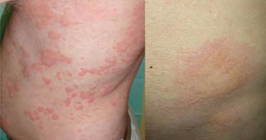
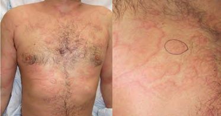
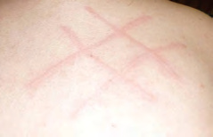
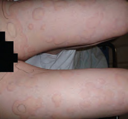
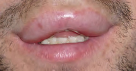
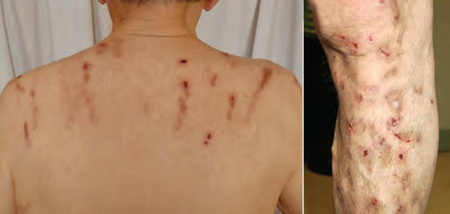

- ¿Cada lesión individual desaparece por completo antes de 24 horas?
- ¿Hay angioedema, y aparece con habones o de forma aislada?
- ¿Hay síntomas sistémicos que hagan pensar en anafilaxia?
Marca una lesión y deja que el tiempo haga parte del diagnóstico
Un brote puede durar días, pero cada habón verdadero migra y se resuelve en menos de 24 horas, sin descamación, púrpura ni pigmentación residual. Fotografiar y rodear una lesión dudosa permite comprobarlo.
Evanescente, lisa y pruriginosa: comportamiento típico del habón.
Urticaria aguda; no equivale a alergia y suele no precisar estudio.
Urticaria crónica espontánea o inducible: revisar impacto y control.

Superficie lisa, centro pálido y contorno cambiante; importa tanto la evolución como la forma.
Recopilación Dermatología 2025 · pág. 12.
Si persiste en el mismo lugar más de 24 horas, hay que replantear el diagnóstico.
Recopilación Dermatología 2025 · pág. 12.
La forma reproduce la fricción; es una urticaria inducible frecuente.
Recopilación Dermatología 2025 · pág. 12.
Lesiones fijas, dolor o quemazón y residuo purpúrico obligan a pensar más allá de la urticaria.
Recopilación Dermatología 2025 · pág. 13.No busques una causa exótica antes de confirmar que es urticaria
La historia debe centrarse en cronología, desencadenantes reproducibles, fármacos, infección reciente y síntomas asociados. Una batería indiscriminada de alergia rara vez aclara una urticaria espontánea.
Pregunta cuánto dura cada lesión concreta, no cuánto lleva el brote. Dolor, púrpura o marca residual orientan a vasculitis u otro imitador.
Fricción, presión retardada, frío, calor, ejercicio, agua o luz. En urticaria por frío, advierte del riesgo de exposición corporal extensa.
Medicamento nuevo, AINE, picadura, alimento con relación inmediata y reproducible o infección reciente. Evita listas interminables sin temporalidad.
Sueño, trabajo, frecuencia, angioedema y respuesta al antihistamínico permiten decidir escalado y derivación.
Aguda, solo cutánea
- Diagnóstico clínico.
- No precisa analítica ni pruebas alérgicas rutinarias.
- Buscar un desencadenante solo si la historia lo hace plausible.
- Explicar que nuevos habones pueden aparecer varios días.
Crónica o atípica
- Hemograma y PCR/VSG como estudio básico dirigido.
- TSH/anticuerpos, función renal-hepática u otras pruebas según clínica.
- Provocación específica si se sospecha urticaria inducible.
- Biopsia si la lesión es fija, dolorosa, purpúrica o deja residuo.
Un antihistamínico no sedante, tomado de forma regular, es la base
La respuesta se valora con adherencia real y tiempo suficiente. Cambiar cada pocos días de molécula o añadir sedantes de primera generación dificulta saber qué funciona y aumenta efectos adversos.
Antihistamínico H1 de segunda generación una vez al día; por ejemplo, cetirizina 10 mg/día o bilastina 20 mg/día en adulto, ajustando a ficha técnica y paciente.
En urticaria crónica no controlada, la guía internacional permite aumentar hasta ×4 la dosis del mismo fármaco. Es uso fuera de ficha en muchos productos: documentar y revisar tolerancia.
Si persiste, valorar omalizumab y alternativas especializadas. No mezclar múltiples antihistamínicos como sustituto de un escalado ordenado.
No controla el mecanismo crónico ni previene recaídas. Reservar un ciclo breve a situaciones agudas seleccionadas, nunca como mantenimiento.
Se utiliza intramuscularmente cuando el cuadro cumple criterios de anafilaxia: compromiso respiratorio o cardiovascular, o afectación de varios sistemas tras una exposición compatible. El edema de labios aislado y estable no equivale por sí solo a anafilaxia.
Con habones sugiere histamina; aislado obliga a pensar en bradicinina
El angioedema dura más que el habón, suele afectar labios, párpados, lengua, genitales o extremidades y puede ser doloroso. La primera decisión es asegurar estabilidad respiratoria; después, definir el mecanismo.

La imagen no informa del mecanismo: hay que preguntar por habones, IECA, recurrencias y antecedentes familiares.
Recopilación Dermatología 2025 · pág. 15.Pistas de bradicinina
- Angioedema aislado, sin habones ni prurito.
- Tratamiento con IECA, incluso iniciado meses o años antes.
- Episodios recurrentes, dolor abdominal o historia familiar.
- Mala respuesta a antihistamínico, corticoide y adrenalina.
Suspende el IECA si está implicado y deriva para estudio de C4/C1-inhibidor cuando el patrón lo sugiera. La afectación lingual, laríngea o progresiva requiere valoración inmediata.
Primero decide si existe una lesión primaria
Las excoriaciones, costras y liquenificación son consecuencias del rascado. Examina zonas difíciles de alcanzar, espacios interdigitales, uñas, cuero cabelludo, pliegues y convivientes antes de etiquetar un prurito como sistémico.

La espalda central respetada y las excoriaciones en zonas accesibles ayudan a reconstruir qué apareció primero.
Recopilación Dermatología 2025 · pág. 16.Prurito sin lesión primaria
- Revisa fármacos, xerosis, embarazo y síntomas constitucionales.
- Explora adenopatías, ictericia, tiroides y signos de enfermedad renal o hepática.
- Si es persistente o generalizado: hemograma, ferritina, función renal-hepática, TSH y glucemia como base adaptable.
- Amplía por historia; no pidas marcadores tumorales como cribado inespecífico.
Busca escabiosis aunque no veas un surco perfecto.
Considera neuropático, contacto, liquen simple o patología regional.
Emoliente sin perfume, ducha corta tibia y revisión farmacológica son intervenciones centrales.
La prioridad depende del mecanismo y del impacto, no del aspecto llamativo
Habones evanescentes, solo piel, buen control y desencadenante no preocupante.
También si hay duda diagnóstica, urticaria inducible relevante o sospecha de vasculitis.
Fármaco, alimento, látex o picadura con temporalidad reproducible; no por toda urticaria espontánea.
Disfonía, estridor, disnea, hipotensión, síncope o progresión lingual/laríngea.
Referencias utilizadas
- EAACI/GA²LEN/EuroGuiDerm/APAAACI. Guía internacional de urticaria.
- Manual de Diagnóstico y Terapéutica Médica, Hospital Universitario 12 de Octubre, capítulo de patología dermatológica; síntesis local en «Urticaria aguda».
- Actualización Dermatología 2025 - Recopilación, capítulo 2. Fuente secundaria y procedencia de las fotografías.